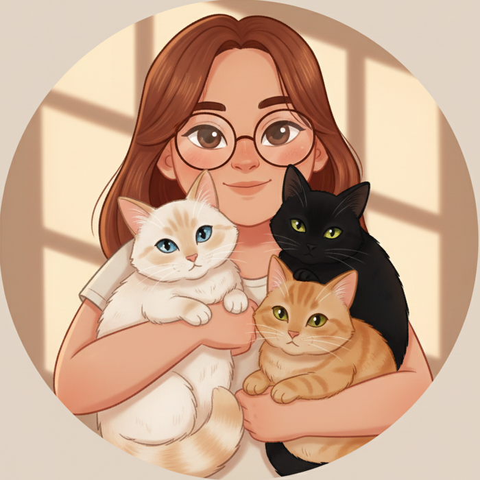

Seja Bem-Vindo!
Como você está? Me chamo Maria Eduarda, estudante de ADS e CC e em busca de uma carreira na área de dados!
Tenho um perfil bem sistemático e independente, afinal, meu MBTI é INTJ. Também gosto muito de ler e aprender coisas novas!

Um pouco mais sobre mim..
Em termos políticos/históricos, sou, literalmente, café com leite. Tenho 3 gatos e uma estante com uns 100 livros (Uns milhares de reais estão aí).
Sou técnica em informática pelo IFTM - Campus Patrocínio e minha devoção à área cresceu por aí, mas esse perfil lógico vem desde pequena com meus quebra-cabeças.

Alguns trabalhos meus..
Acredito que um bom desenvolvedor nunca para de aprender. Por isso, utilizo meus projetos pessoais como um laboratório para aprimorar minhas habilidades. Você encontrará um pouco de cada área por aqui, refletindo minha curiosidade constante por novas tecnologias.